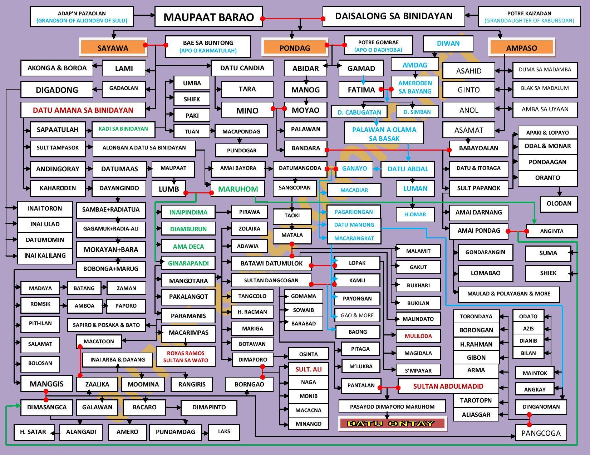

This local record helps keep references accessible when the original website is under maintenance, temporarily unavailable, moved, or removed. It credits and links to the original author and publisher. Check the backup status below: some records contain saved source text or an image, while others contain only notes or publication details. These records do not replace the original source or independently verify its claims.
Credit: Hosted by Ontay & Marogong.Net. Original source: https://img.webme.com/pic/a/acmaly88/sayawachart-page-001.jpg
Original chart image saved November 9, 2026.
A genealogical reference tracing the Sayawa lineage and its family connections in Binidayan and Bayang, Ranao.
Open saved original chart image
